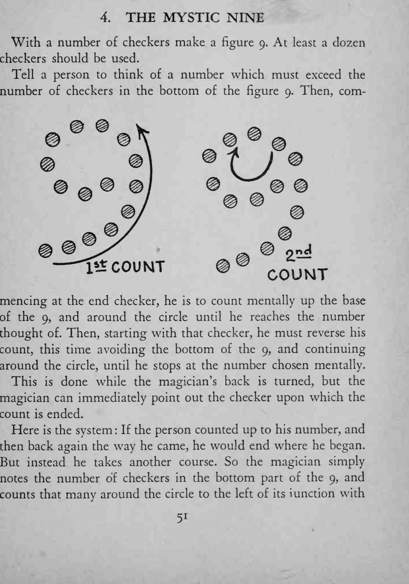
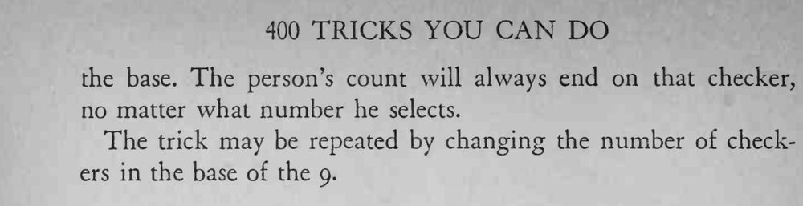

观众心里想一个数，沿着摆成「9」字形的棋子数一圈再折返回来，最后停在哪枚棋子上，背过身的魔术师也能立刻指出来。
改变「9」字底部的棋子数就能重复表演，每次落点都会变。


With a number of checkers make a figure 9. At least a dozen checkers should be used. Tell a person to think of a number which must exceed the number of checkers in the bottom of the figure 9. Then, commencing at the end checker, he is to count mentally up the base of the 9, and around the circle until he reaches the number thought of. Then, starting with that checker, he must reverse his count, this time avoiding the bottom of the 9, and continuing around the circle, until he stops at the number chosen mentally. This is done while the magician's back is turned, but the magician can immediately point out the checker upon which the count is ended. Here is the system If the person counted up to his number, and then back again the way he came, he would end where he began. But instead he takes another course. So the magician simply notes the number of checkers in the bottom part of the 9, and counts that many around the circle to the left of its unction with the base. The person's count will always end on that checker, no matter what number he selects. The trick may be repeated by changing the number of checkers in the base of the 9.